1Carnegie Mellon University 2Meta
*Equal contribution
TrackEverything tracks all points across all frames of videos with 1000+ frames by representing the video as persistent 3D scene tracks in world coordinates.
In all visualizations, we show trails for dynamic points only. The method tracks all points and accounts for camera motion; we omit static-point trails in the 2D renderings for clarity.
Dense tracks on full-length sequences (1000+ frames). Click any clip to enlarge. We recommend clicking the dance videos to enjoy tracking with music. Drag or scroll the strip to see more.
Dense 3D tracks rendered in the input view. Drag or scroll the strip to see the rest; click any clip to enlarge.
Per-window classification decides where trajectories are decoded. Red points are classified as dynamic, blue points as static. Drag or scroll the strip to see the rest; click any clip to enlarge.
Qualitative comparison against prior trackers on the same sequences. Notice how prior methods mostly track points from the first frame, while TrackEverything begins tracking a point as soon as it appears in the video. Each row is one sequence; click any clip to enlarge. Notice how prior methods mostly track points from the first frame, while TrackEverything begins tracking a point as soon as it appears in the video.
Tracking degrades under fast, large-displacement motion and under repetitive or low-texture backgrounds, where the lifted 3D correspondences become ambiguous.
3D-APD-P and 3D-APD-M on TAPVid-3D as the sequence length and the number of query points are scaled up.
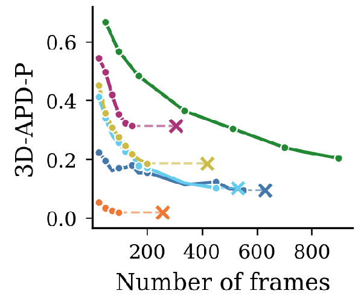
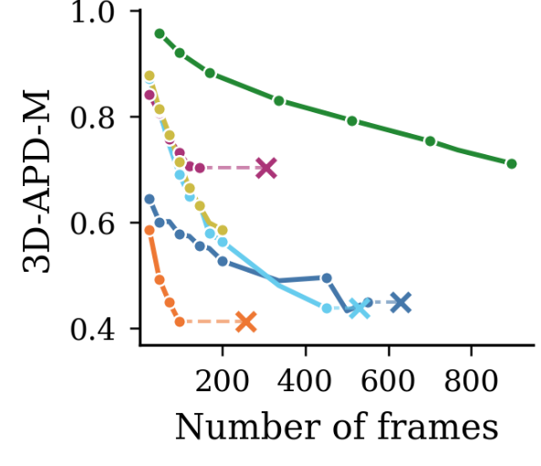
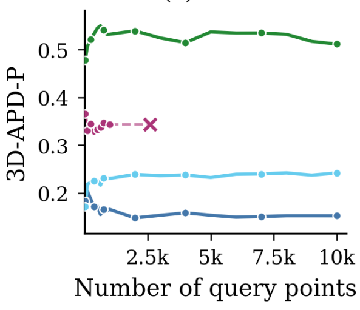
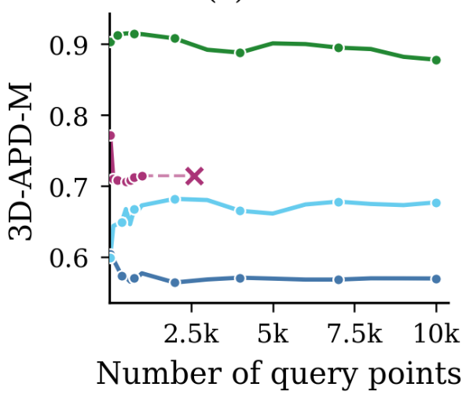
Without iterative refinement or WAFT, tracks fragment or drift on fast motion; enabling each recovers coherent long trails.
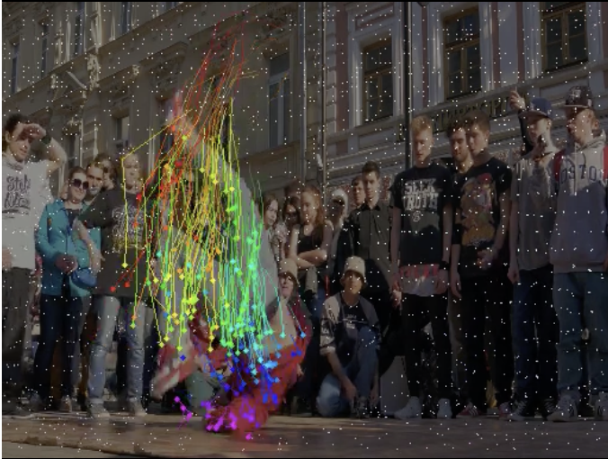
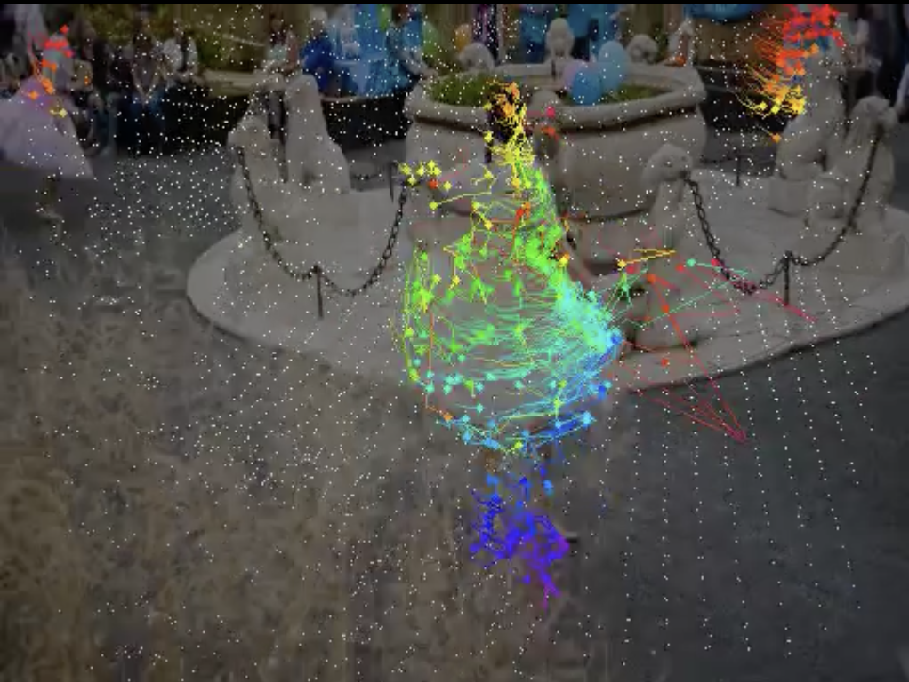
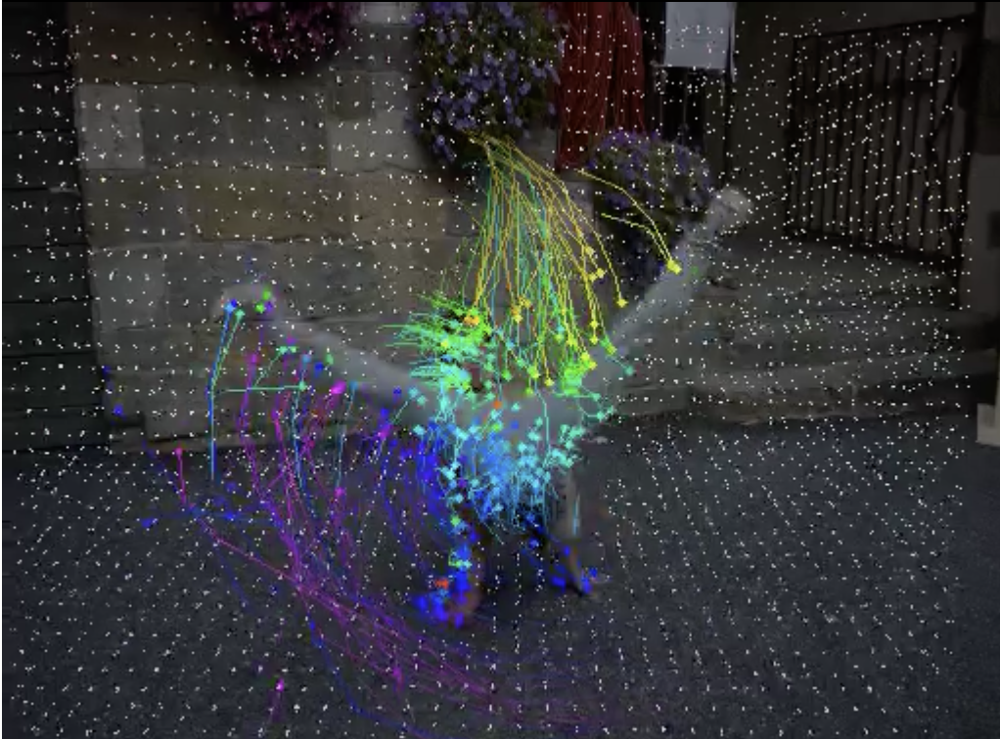
w/ refinement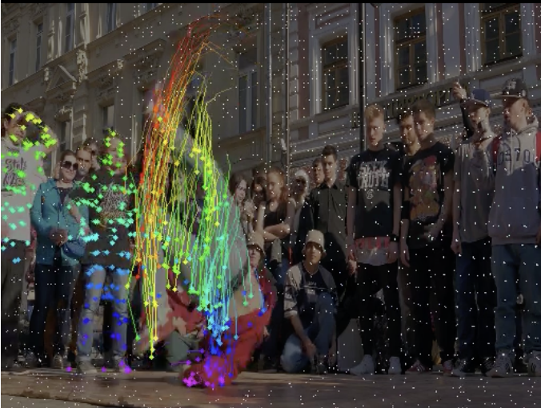
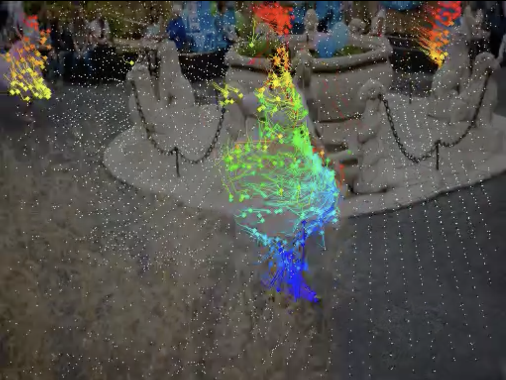
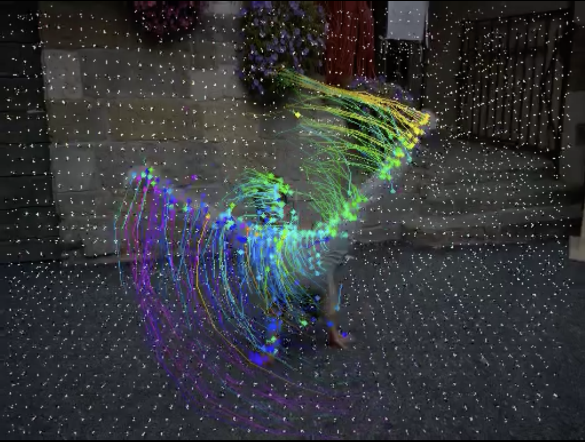
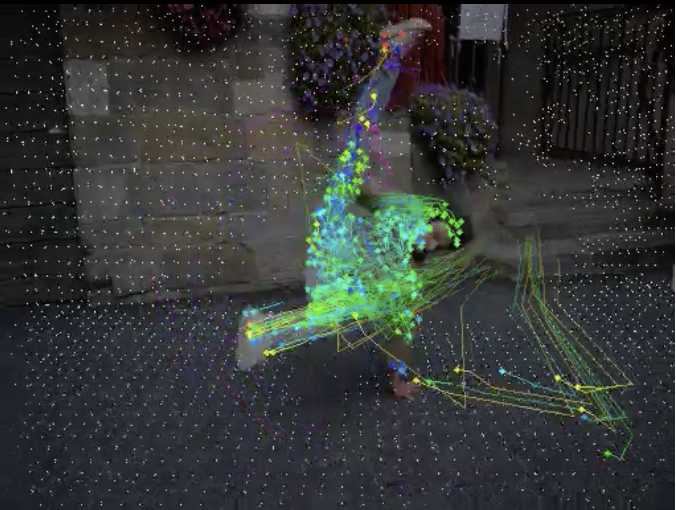
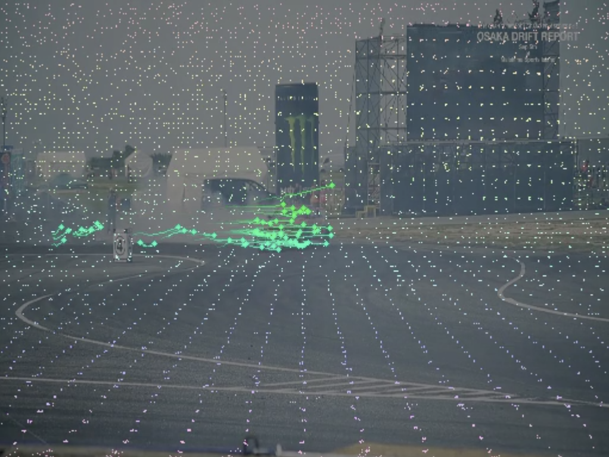
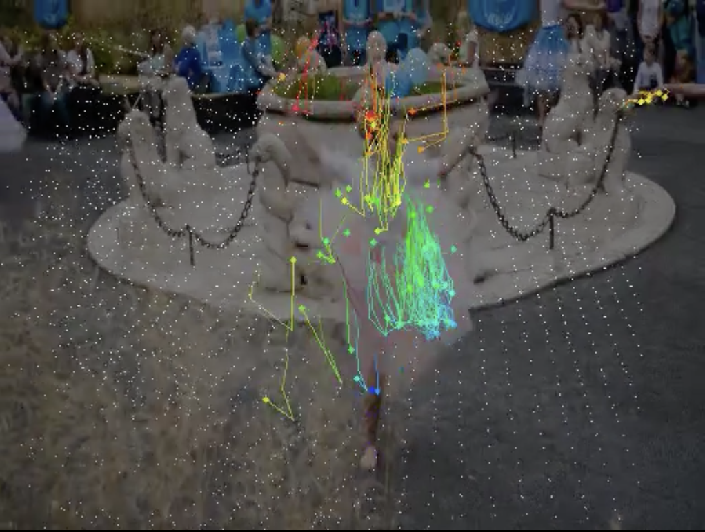
w/ WAFT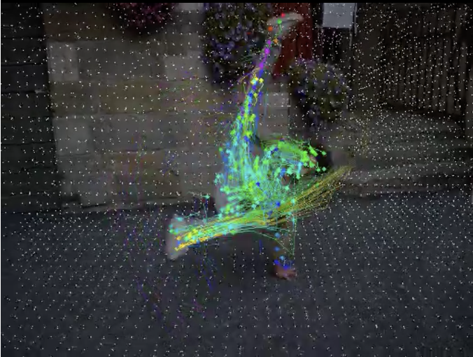
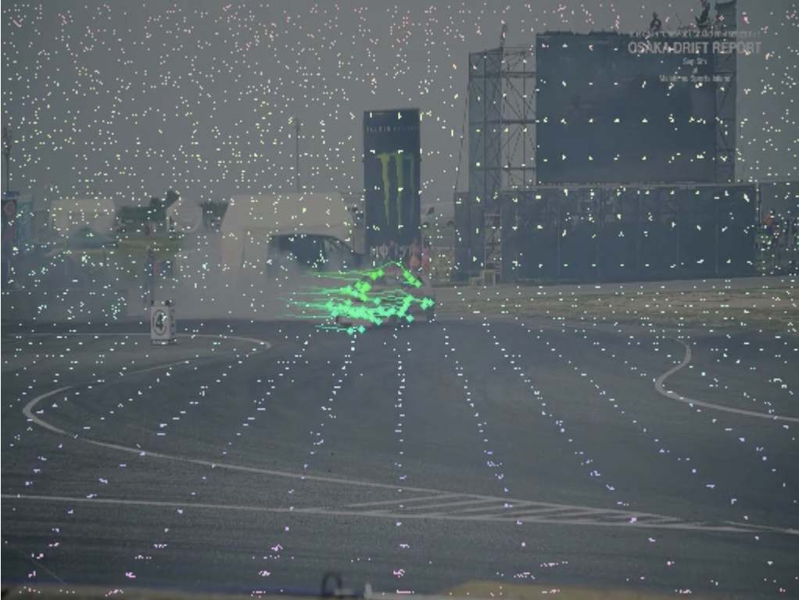
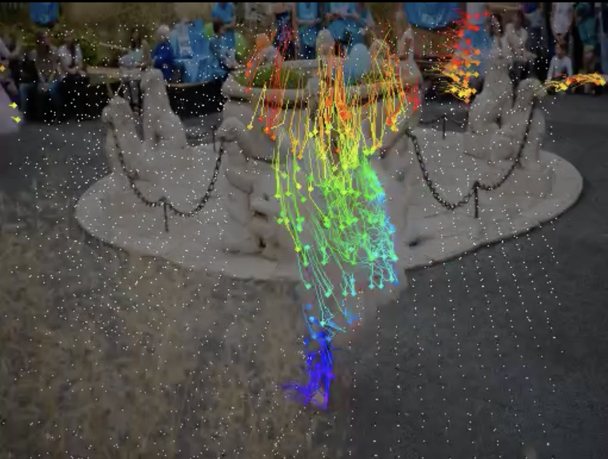
@inproceedings{trackeverything2026,
title = {TrackEverything: Dense 3D Point Tracking in Long Videos
via 3D Scene Representations},
author = {Jain, Ayush and Paruchuri, Sreeharsha and Gupta, Ishita
and Zhang, Fan and Schmidt, Tanner and Engel, Jakob
and Fragkiadaki, Katerina and Harley, Adam W.},
booktitle = {Advances in Neural Information Processing Systems (NeurIPS)},
year = {2026}
}